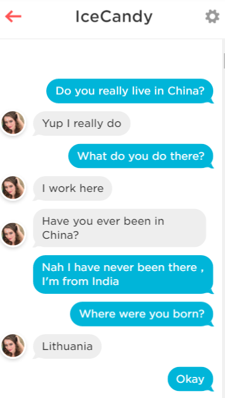
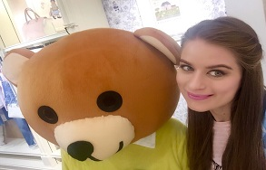
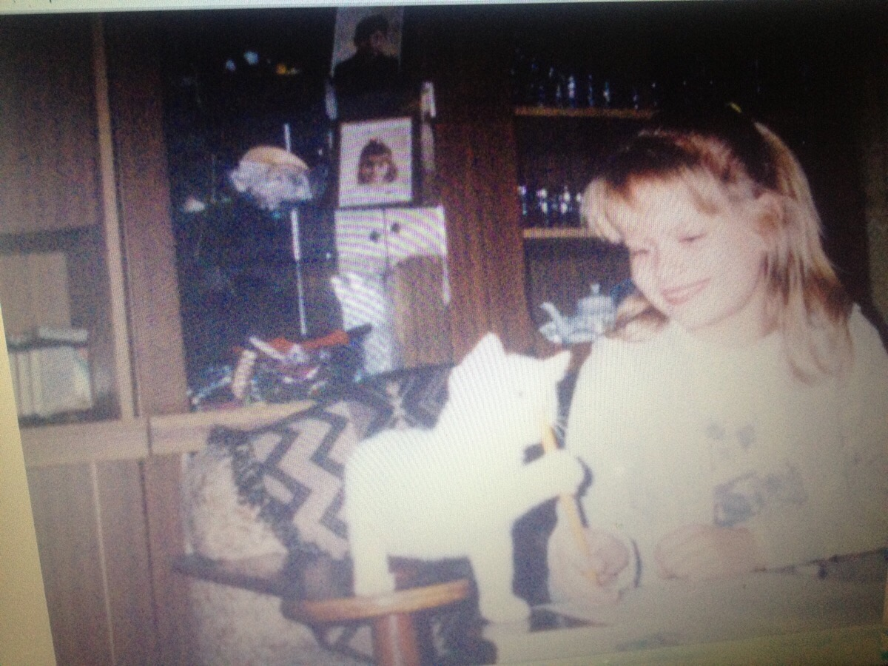

<!--
<!DOCTYPE html>
<html lang="en">
<head>
	<meta charset="UTF-8" />
	<meta http-equiv="X-UA-Compatible" content="IE=edge,chrome=1">
	<title>Adorable Cutie</title>
	<meta name="viewport" content="width=device-width, initial-scale=1.0">
	<meta name="author" content="" />
	<link rel="shortcut icon" href="../favicon.ico">
	<link href='http://fonts.googleapis.com/css?family=Josefin+Slab:400,700' rel='stylesheet' type='text/css'>
	<script src="http://ajax.googleapis.com/ajax/libs/jquery/1.4.2/jquery.min.js"></script>
	<link rel="stylesheet" type="text/css" href="css/demo.css" />
	<link rel="stylesheet" type="text/css" href="css/style.css" />
	<link rel="stylesheet" type="text/css" href="css/clock.css" />
	<link rel="stylesheet" type="text/css" href="css/balloon.css" />
	<link rel="stylesheet" type="text/css" href="css/doors.css" />
	<script src="js/custom.js"></script>
	<script type="text/javascript" src="js/modernizr.custom.79639.js"></script>
	&lt;!&ndash;[if lte IE 8]>
	<link rel="stylesheet" type="text/css" href="css/simple.css" />
	<![endif]&ndash;&gt;
</head>
<body>
<div class="container">

	<div class="st-container">

		<input type="radio" name="radio-set" checked="checked" id="st-control-1"/>
		<a href="#st-panel-1">1</a>
		<input type="radio" name="radio-set" id="st-control-2"/>
		<a href="#st-panel-2">2</a>
		<input type="radio" name="radio-set" id="st-control-3"/>
		<a href="#st-panel-3">3</a>
		<input type="radio" name="radio-set" id="st-control-4"/>
		<a href="#st-panel-4">4</a>
		<input type="radio" name="radio-set" id="st-control-5"/>
		<a href="#st-panel-5">5</a>
		<input type="radio" name="radio-set" id="st-control-6"/>
		<a href="#st-panel-6">6</a>
		<input type="radio" name="radio-set" id="st-control-7"/>
		<a href="#st-panel-7">7</a>
		<input type="radio" name="radio-set" id="st-control-8"/>
		<a href="#st-panel-8">8</a>
		<input type="radio" name="radio-set" id="st-control-9"/>
		<a href="#st-panel-9">9</a>
		<input type="radio" name="radio-set" id="st-control-10"/>
		<a href="#st-panel-10">10</a>

		<div class="st-scroll">

			<section class="st-panel" id="st-panel-1">
				<div class="st-deco" data-icon="H"></div>
				<h2>April 17th, 1991</h2>
				<p>Let's wind the clock 25 years back. Someone was born in Lithuania, but was it a baby or was it a ghost?
				</p>
				<div class="clock">
					<div class="top"></div>
					<div class="right"></div>
					<div class="bottom"></div>
					<div class="left"></div>
					<div class="center"></div>
					<div class="shadow"></div>
					<div class="hour"></div>
					<div class="minute"></div>
					<div class="second"></div>
				</div>
			</section>

			<section class="st-panel st-color" id="st-panel-2">
				<div class="st-deco" data-icon="2"></div>
				<h2>Ingrida</h2>
				<p>Two wise people gave their child two of the most wonderful things,
					a beautiful name, and the prettiest eyes. I mean, look at those eyes! (and that red nose)</p>
				
			</section>

			<section class="st-panel" id="st-panel-3">
				<div class="st-deco" data-icon="B"></div>
				<h2>How I know her?</h2>
				<div class="quiz">
					
				</div>
			</section>

			<section class="st-panel st-color" id="st-panel-4">
				<div class="st-deco" data-icon="x"></div>
				<h2>Lithuanian in China?</h2>
				<p>Ditto, that was my thought too. STORY-Part 1. She missed some exam and could not apply for admission as she had just returned from Milan.<br>
					So she had to make a choice, watch out for STORY - part 2. So excited!</p>
				
			</section>

			<section class="st-panel" id="st-panel-5">
				<div class="st-deco" data-icon="U"></div>
				<h2><span style="text-decoration: line-through">Story Part II</span></h2>
				<p>Despite asking her many times, she did not tell me. Bad Ingrida. Also she has refrained me from calling her
				kid/kiddo, she doesn't realize that I do that because I see a little girl in her sometimes. :(</p>
				
			</section>

			<section class="st-panel st-color" id="st-panel-6">
				<div class="st-deco" data-icon="Ú"></div>
				<h2>Obelix</h2>
				<p>Though she does not drink, she seems always high. So high. Maybe she has the curse of obelix. And after drinking water/juice in
                clubs, she likes to shake it off.</p>
                
			</section>

			<section class="st-panel" id="st-panel-7">
				<div class="st-deco" data-icon="$"></div>
				<h2>Many-Faced Ghost</h2>
				<p>And like a ghost, she has many powers. She changes her face somehow in every photo. Every face leaves me awestruck though.
					See for yourself, many faces of Ingrida coming up..</p>
				
			</section>

			<section class="st-panel st-color" id="st-panel-8">
				<div class="st-deco" data-icon="1"></div>
				<div id="containers">
					<div id="vertical" class="third">
						
						
					</div>
					<div id="left" class="third">
						
						
					</div>
					<div id="bottom-left" class="third last">
						
						
					</div>
					<div id="bottom" class="third">
						
						
					</div>
					<div id="right" class="third">
						
						
					</div>
					<div id="bottom-right" class="third last">
						
						
					</div>
				</div>
			</section>

            <section class="st-panel" id="st-panel-9">
                <div class="st-deco" data-icon="b"></div>
                <h2>One in a <span style="text-decoration: line-through">million</span> trillion</h2>
                <p>Yes, she may kill a taxi driver some day but still she is something beyond imagination.
                    She is so beautiful on the inside. She is goofy, adorable. I will always run out of words.
                    She is precious! So this is a little something from my side for her birthday.</p>
                
            </section>

			<section class="st-panel" id="st-panel-10">
				<div class="st-deco" data-icon="]"></div>
				<h2>Happy Birthday!</h2>
				<p>From my heart to yours, happy birthday, Ingrida! I hope your heart bursts with love on your special day. Though not literally.
					That wouldn’t make for a very good birthday</p>
				<div class="balloon" style="top:45%;">
					<div><span class="bday-text">☺</span></div>
					<div><span class="bday-text">B</span></div>
					<div><span class="bday-text">D</span></div>
					<div><span class="bday-text">A</span></div>
					<div><span class="bday-text">Y</span></div>
					<div><span class="bday-text">!</span></div>
				</div>
			</section>

		</div>&lt;!&ndash; // st-scroll &ndash;&gt;

	</div>&lt;!&ndash; // st-container &ndash;&gt;

</div>
</body>
</html>-->
